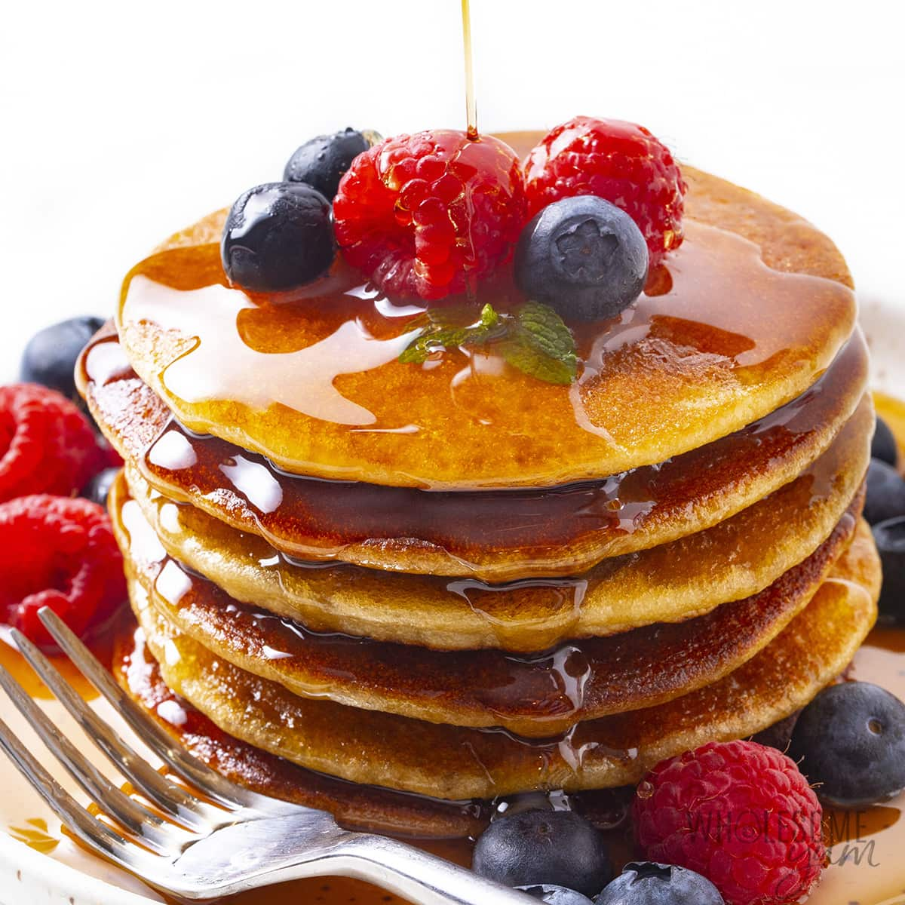

Many generations have added to and gained strength from this recipe
Wars have been fought. Epic battles that shook the sky and kitchenware
Spies and assasins, have come for it.
And perished, for the gaurdians are too powerful
And now, I share it with you.
Be strong.
Be honoured.
Mix the dry and wet ingredients separately.
Stir together. While this does not need to be
beaten, it should be smooth by the time you finish.
Add water or flour if not at desired consitency
Make sure to pre-heat the pan before cooking.
Out of respect for tradition, the first pancake
belongs to the dog.